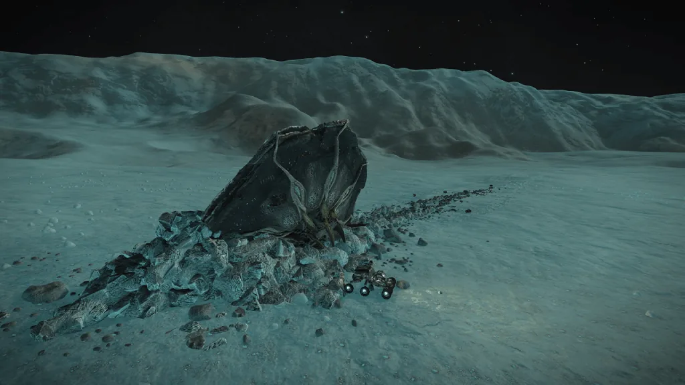

…Material Analysis complete…
…High concentrations of mycoid particle detected…
…Searching known databases for identification…
…Results confirmed…
Designation: Thargoid Scout
Image: SHIP ANALYSIS
A crashed Thargoid Scout can be found on Pleiades Sector LN-T c3-4 body 2 a.
The coordinates for the site are -60.2105, 41.1846 (in Live/4.0) or at -60.8799, 42.5728 (in Legacy/3.8).
The crash site is surrounded by Thargoid Technology Samples, Thargoid Biological Matter, and Thargoid Resin.
There is a data point to target with your SRV's data link scanner, this will give you a waypoint that makes further visits easier, and returns a ship analysis:
…Material Analysis complete…
…High concentrations of mycoid particle detected…
…Searching known databases for identification…
…Results confirmed…
Designation: Thargoid Scout
Image: SHIP ANALYSIS
This is the second crashed Thargoid Scout found, unlike the previous crash this one appears to have crashed 'side-on'.
A third crashed Thargoid Scout has since been found.
